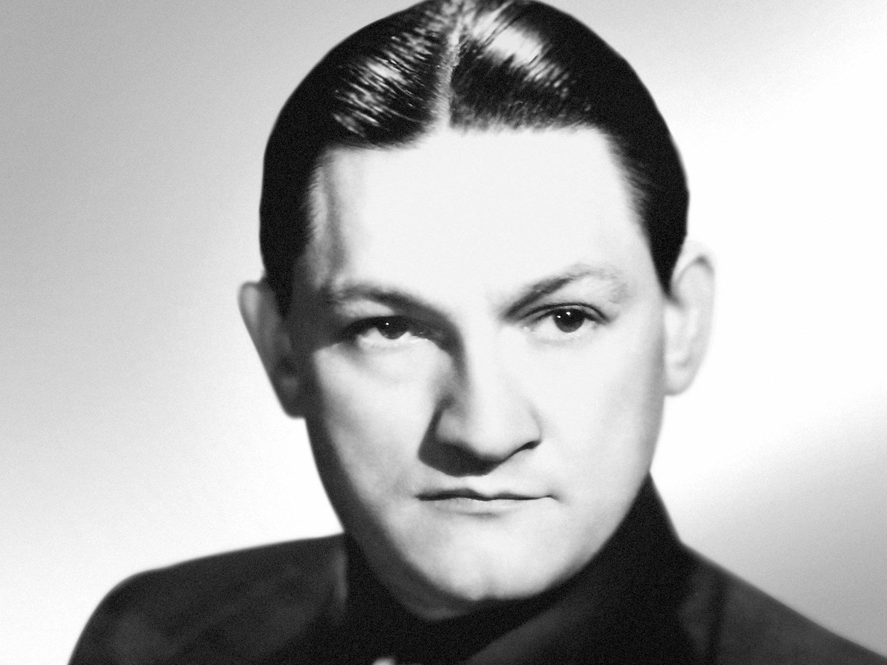

| Oscar Nominations | ||||
|---|---|---|---|---|
| Ceremony | Film | Category | Role | Result |
| 29th Academy Awards Oscars 1957 |
Around the World in 80 Days | Music (Music Score of a Dramatic or Comedy Picture) | Composer | Won |
| Written on the Wind | Music (Song) | "Written On The Wind" Music | Nominated | |
| 23rd Academy Awards Oscars 1951 |
Samson and Delilah | Music (Music Score of a Dramatic or Comedy Picture) | Composer | Nominated |
| 22nd Academy Awards Oscars 1950 |
My Foolish Heart | Music (Song) | "My Foolish Heart" Music | Nominated |
| 21st Academy Awards Oscars 1949 |
The Emperor Waltz | Music (Scoring of a Musical Picture) | Composer | Nominated |
| 18th Academy Awards Oscars 1946 |
Love Letters | Music (Music Score of a Dramatic or Comedy Picture) | Composer | Nominated |
| Music (Song) | "Love Letters" Music | Nominated | ||
| 16th Academy Awards Oscars 1944 |
For Whom the Bell Tolls | Music (Music Score of a Dramatic or Comedy Picture) | Composer | Nominated |
| 15th Academy Awards Oscars 1943 |
Flying Tigers | Music (Music Score of a Dramatic or Comedy Picture) | Composer | Nominated |
| Silver Queen | Music (Music Score of a Dramatic or Comedy Picture) | Composer | Nominated | |
| Take a Letter, Darling | Music (Music Score of a Dramatic or Comedy Picture) | Composer | Nominated | |
| 14th Academy Awards Oscars 1942 |
Hold Back the Dawn | Music (Music Score of a Dramatic Picture) | Composer | Nominated |
| 13th Academy Awards Oscars 1941 |
Arise, My Love | Music (Scoring) | Scoring | Nominated |
| Arizona | Music (Original Score) | Composer | Nominated | |
| North West Mounted Police | Music (Original Score) | Composer | Nominated | |
| The Dark Command | Music (Original Score) | Composer | Nominated | |
| 12th Academy Awards Oscars 1940 |
Golden Boy | Music (Original Score) | Composer | Nominated |
| Gulliver's Travels | Music (Original Score) | Composer | Nominated | |
| Man of Conquest | Music (Original Score) | Composer | Nominated | |
| Way Down South | Music (Scoring) | Scoring | Nominated | |
| 11th Academy Awards Oscars 1939 |
Army Girl | Music (Original Score) | Composer | Nominated |
| Breaking the Ice | Music (Original Score) | Composer | Nominated | |

Victor Young